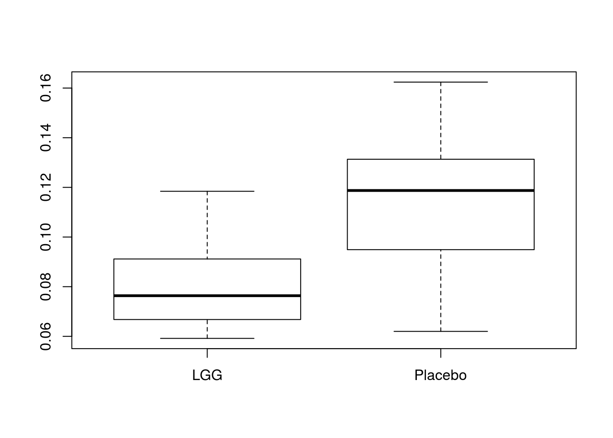
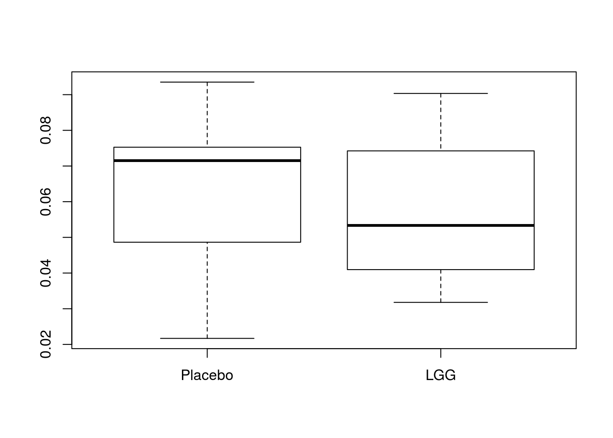
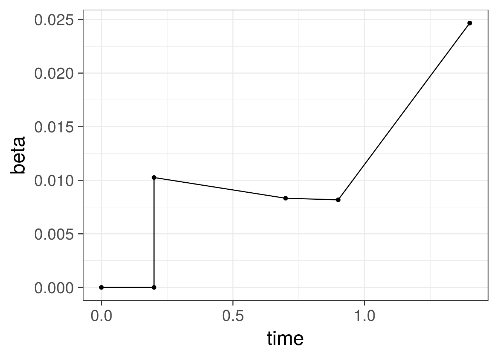

Some examples on calculating beta diversity and using it to quantify community divergence within a given sample set.
Load example data
library(microbiome)
data(peerj32)
pseq <- peerj32$phyloseqDivergence of a given sample set can be quantified as the average dissimilarity of each sample from the group mean; the dissimilarity can be quantified by beta diversity, for instance. This was applied in group-level comparisons for instance in Salonen et al. ISME J 2014 (they focused on homogeneity using inverse correlation, whereas here we focus on divergence using correlation but the measure is essentially the same).
Calculate group divergences within the LGG (probiotic) and Placebo groups
b.pla <- group_divergence(subset_samples(pseq, group == "Placebo"))
b.lgg <- group_divergence(subset_samples(pseq, group == "LGG"))Use these to compare microbiota divergence within each group. The LGG group tends to have smaller values, indicating that the samples are more similar to the group mean, and the LGG group is less heterogeneous (has smaller spread / is more homogeneous):
boxplot(list(LGG = b.lgg, Placebo = b.pla))
The inter- and intra-invididual stability (or homogeneity) measures are obtained as 1-b where b is the group divergence with the anticorrelation method (Salonen et al. ISME J 2014).
Quantify beta diversity within subjects over time (as in Salonen et al. ISME J 2014 for intra-individual stability)
betas <- list()
groups <- as.character(unique(meta(pseq)$group))
for (g in groups) {
#df <- meta(subset_samples(pseq, group == g))
df <- subset(meta(pseq), group == g)
beta <- c()
for (subj in df$subject) {
# Pick the samples for this subject
dfs <- subset(df, subject == subj)
# Check that the subject has two time points
if (nrow(dfs) == 2) {
s <- as.character(dfs$sample)
# Here with just two samples we can calculate the
# beta diversity directly
beta[[subj]] <- 1-cor(abundances(pseq)[, s[[1]]],
abundances(pseq)[, s[[2]]],
method = "spearman")
}
}
betas[[g]] <- beta
}
boxplot(betas)
Calculate change in beta diversity (community dissimilarity) over time within a single individual
data(atlas1006)
pseq <- atlas1006
# Identify subject with the longest time series (most time points)
s <- names(which.max(sapply(split(meta(pseq)$time, meta(pseq)$subject), function (x) {length(unique(x))})))
# Pick the metadata for this subject and sort the
# samples by time
library(dplyr)
df <- meta(pseq) %>% filter(subject == s) %>% arrange(time)
# Calculate the beta diversity between each time point and
# the baseline (first) time point
beta <- c(0, 0) # Baseline similarity
s0 <- subset(df, time == 0)$sample
for (tp in df$time[-1]) {
# Pick the samples for this subject
# If the same time point has more than one sample,
# pick one at random
st <- sample(subset(df, time == tp)$sample, 1)
a <- abundances(pseq)
b <- 1 - cor(a[, s0], a[, st], method = "spearman")
beta <- rbind(beta, c(tp, b))
}
colnames(beta) <- c("time", "beta")
beta <- as.data.frame(beta)
library(ggplot2)
p <- ggplot(beta, aes(x = time, y = beta)) +
geom_point() + geom_line()
print(p) 
## [1] "ade4"
## [1] "compositions"
## [1] "MASS"
## [1] "moments"
## [1] "scales"
## [1] "tgp"
## [1] "WGCNA"
## [1] "diptest"
## [1] "FD"
## [1] "gcookbook"
## [1] "GGally"
## [1] "ggnet"
## [1] "Hmisc"
## [1] "hrbrthemes"
## [1] "igraph"
## [1] "intergraph"
## [1] "limma"
## [1] "lme4"
## [1] "netresponse"
## [1] "network"
## [1] "RColorBrewer"
## [1] "sna"
## [1] "SpiecEasi"
## [1] "tidyverse"
## [1] "viridis"